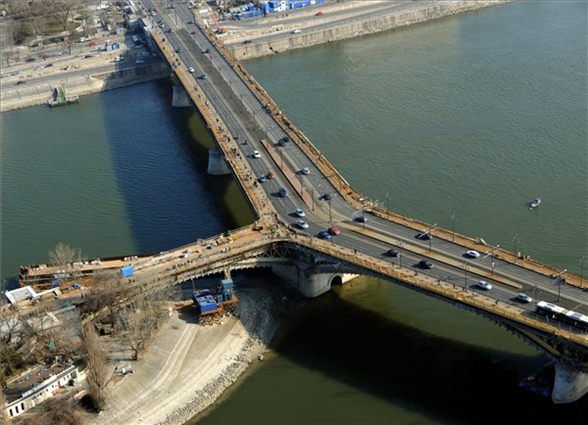

Margit-híd
A budapesti Margit híd a Szent István körutat és a Margit körutat köti össze a Margit-sziget érintésével.
A főváros második állandó hídjaként 1872 és 1876 között épült, 1876. április 30-án avatták fel.
A híd a sziget melletti két Duna-ágat, a hídközép felé haladva egyre növekvő támaszközű nyílással hidalja át.
A szigetnél a hídtengely megtörik, így a pillérek mindkét Duna-ágban párhuzamosak a sodorvonallal.
A középső pillérnél csatlakozik a hídhoz az 1900. augusztus 19-én megnyitott, Margit-szigetre vezető szárnyhíd,
melynek megépítéséig a sziget csak csónakkal volt megközelíthető.
Teljes hosszúsága: 607,6 m.
Szélesség: 25,0 m.
